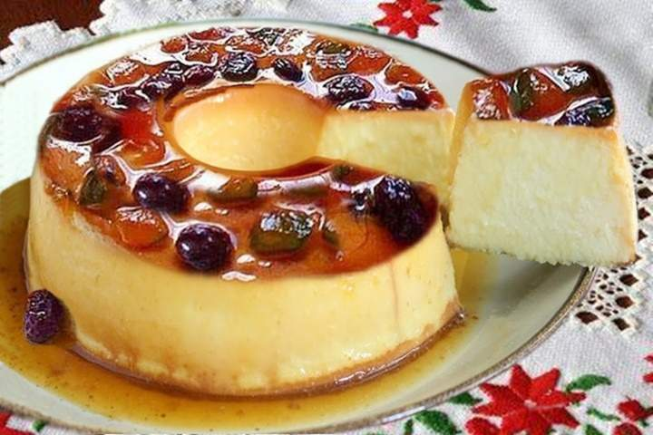

Você poderá conhecer as seguintes receitas:
Pudim de Panetone

Ingredientes:
- 200 gramas de açúcar refinado
- 100 ml de água quente
- 1 lata de leite condensado
- 1 lata de leite (mesma medida do leite condensado)
- 4 ovos inteiros
- 180 gramas de panetone
- 300 gramas de frutas cristalizadas
Modo de preparo:
- Para fazer o caramelo, derreta o açúcar refinado em uma panela até ficar dourado.
- Junte a água quente e deixe ferver até que se dissolva o açúcar e a calda engrossar. Reserve.
- Faça a massa do pudim batendo o leite condensado, o leite e os ovos no liquidificador.
- Pique o panetone em pedaços.
- Coloque o caramelo reservado em uma forma de pudim de 21 cm de diâmetro, espalhando bem pelas laterais e pelo centro.
- Distribua o panetone no fundo da forma e despeje a massa do pudim por cima
- Espere cerca de 5 minutos para que o panetone absorva todo o líquido.
- Cubra com papel alumínio e leve ao forno a 200°C em banho-maria, por 70 minutos.
- Desenforme depois de totalmente frio e leve á geladeira.
- Antes de servir, decore com as frutas cristalizadas.